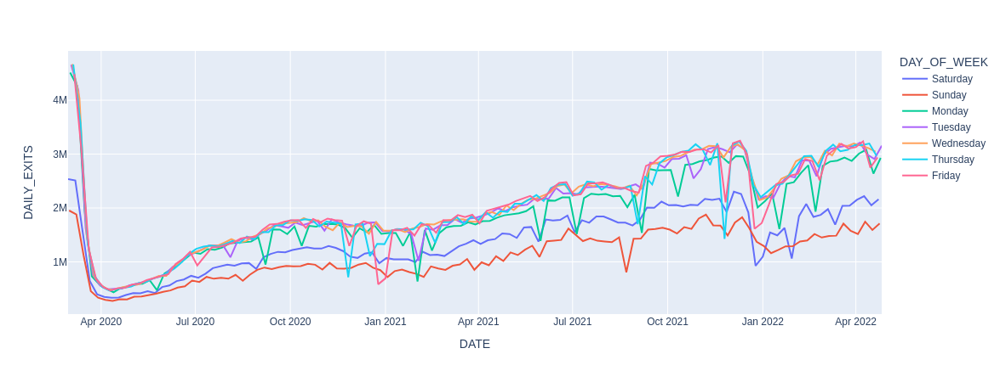
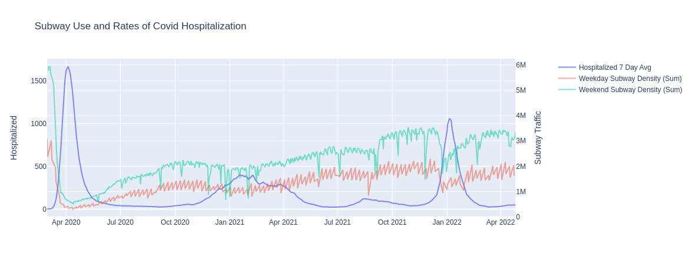

Subway use drastically declined as the pandemic startd and NYC went into lockdown. Generally, subway use has consitently been rising since May 2020.
Subway use was indeed negatively related to Covid Rates. As Covid spiked people used the subway less.
There is a strong seasonality componenent wihtin subway use between Weekdays and Weekends. Weekend subway use is more strongly related with Covid Rates than Weekdays.
| Cases | Hosp* | Deaths | Weekly Cases | All* Weekly Cases | Weekly Hosp* | Weekly Deaths | All* Weekly Deaths | |
|---|---|---|---|---|---|---|---|---|
| Entries | 0.019 | -0.287 | -0.392 | -0.055 | -0.049 | -0.332 | -0.399 | -0.388 |
| Exits | 0.052 | -0.305 | -0.414 | -0.013 | -0.006 | -0.342 | -0.418 | -0.409 |
| Density | 0.035 | -0.299 | -0.408 | -0.037 | -0.03 | -0.341 | -0.414 | -0.404 |
| Cases | Hosp* | Deaths | Weekly Cases | All* Weekly Cases | Weekly Hosp* | Weekly Deaths | All* Weekly Deaths | ||
|---|---|---|---|---|---|---|---|---|---|
| Daily | Entries | 0.019 | -0.287 | -0.392 | -0.055 | -0.049 | -0.332 | -0.399 | -0.388 |
| Exits | 0.052 | -0.305 | -0.414 | -0.013 | -0.006 | -0.342 | -0.418 | -0.409 | |
| Density | 0.035 | -0.299 | -0.408 | -0.037 | -0.03 | -0.341 | -0.414 | -0.404 | |
| Weekdays | Entries | -0.028 | -0.357 | -0.458 | -0.056 | -0.048 | -0.382 | -0.463 | -0.451 |
| Exits | 0.017 | -0.361 | -0.463 | -0.007 | 0.001 | -0.378 | -0.466 | -0.456 | |
| Density | -0.009 | -0.37 | -0.474 | -0.034 | -0.027 | -0.391 | -0.478 | -0.467 | |
| Weekends | Entries | -0.088 | -0.382 | -0.481 | -0.11 | -0.101 | -0.421 | -0.488 | -0.473 |
| Exits | -0.036 | -0.368 | -0.468 | -0.046 | -0.037 | -0.397 | -0.472 | -0.459 | |
| Density | -0.067 | -0.39 | -0.492 | -0.082 | -0.073 | -0.424 | -0.497 | -0.483 |

